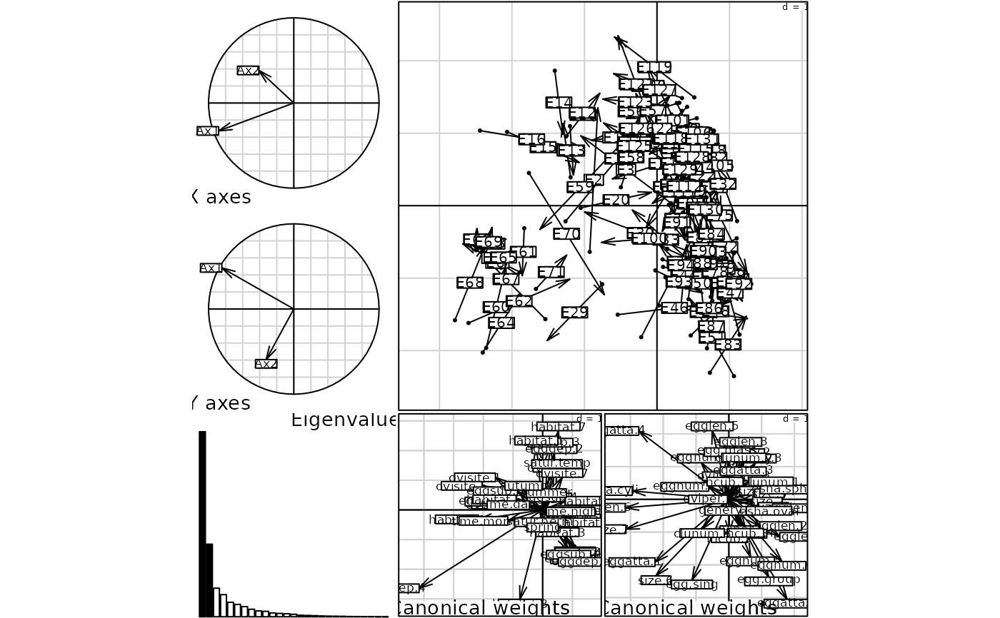

Ecological and Biological Traits
bsetal97.RdThis data set gives ecological and biological characteristics of 131 species of aquatic insects.
Usage
data(bsetal97)Format
bsetal97 is a list of 8 components.
- species.names
is a vector of the names of aquatic insects.
- taxo
is a data frame containing the taxonomy of species: genus, family and order.
- biol
is a data frame containing 10 biological traits for a total of 41 modalities.
- biol.blo
is a vector of the numbers of items for each biological trait.
- biol.blo.names
is a vector of the names of the biological traits.
- ecol
is a data frame with 7 ecological traits for a total of 34 modalities.
- ecol.blo
is a vector of the numbers of items for each ecological trait.
- ecol.blo.names
is a vector of the names of the ecological traits.
Details
The 10 variables of the data frame bsetal97$biol are called in bsetal97$biol.blo.names
and the number of modalities per variable given in bsetal97$biol.blo. The variables are:
female size - the body length from the front of the head to the end of the abdomen (7 length modalities),
egg length - the egg size (6 modalities), egg number - count of eggs actually oviposited,
generations per year (3 modalities: \(\leq 1\), 2, > 2),
oviposition period - the length of time during which oviposition occurred (3 modalities: \(\leq 2\) months,
between 2 and 5 months, > 5 months), incubation time - the time between oviposition and hatching of the larvae
(3 modalities: \(\leq 4\) weeks, between 4 and 12 weeks, > 12 weeks), egg shape (1-spherical, 2-oval, 3-cylindrical),
egg attachment - physiological feature of the egg and of the female (4 modalities), clutch structure (1-single eggs, 2-grouped eggs,
3-egg masses), clutch number (3 modalities : 1, 2, > 2).
The 7 variables of the data frame bsetal97$ecol are called in bsetal97$ecol.blo.names
and the number of modalities per variable given in bsetal97$ecol.blo. The variables are:
oviposition site - position relative to the water (7 modalities), substratum type for eggs - the substratum to which
the eggs are definitely attached (6 modalities), egg deposition - the position of the eggs during the oviposition process (4 modalities),
gross habitat - the general habitat use of the species such as temporary waters or estuaries (8 modalities), saturation variance -
the exposure of eggs to the risk of dessication (2 modalities), time of day (1-morning, 2-day, 3-evening, 4-night),
season - time of the year (1-Spring, 2-Summer, 3-Automn).
Source
Statzner, B., Hoppenhaus, K., Arens, M.-F. and Richoux, P. (1997) Reproductive traits, habitat use and templet theory: a synthesis of world-wide data on aquatic insects. Freshwater Biology, 38, 109--135.
References
See a data description at http://pbil.univ-lyon1.fr/R/pdf/pps029.pdf (in French).
Examples
data(bsetal97)
X <- prep.fuzzy.var(bsetal97$biol, bsetal97$biol.blo)
#> 17 missing data found in block 1
#> 14 missing data found in block 2
#> 28 missing data found in block 3
#> 8 missing data found in block 4
#> 5 missing data found in block 5
#> 19 missing data found in block 6
#> 10 missing data found in block 7
#> 5 missing data found in block 8
#> 2 missing data found in block 9
#> 12 missing data found in block 10
Y <- prep.fuzzy.var(bsetal97$ecol, bsetal97$ecol.blo)
#> 6 missing data found in block 1
#> 16 missing data found in block 2
#> 5 missing data found in block 3
#> 9 missing data found in block 4
#> 15 missing data found in block 5
#> 47 missing data found in block 6
#> 6 missing data found in block 7
plot(coinertia(dudi.fca(X, scan = FALSE),
dudi.fca(Y, scan = FALSE), scan = FALSE))
